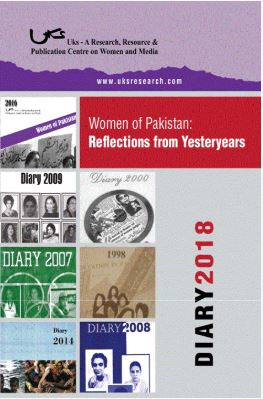

Every year we at Uks, celebrate the achievementsof Pakistani women by launching the Annual Uks Diary. What started out initially as a diary covering women’s achievement in general, evolved into a thematic collection, each diary picturing the stories and experiences of women who have excelled and contributed in that arena.
The Uks diary is a one-of-its kind yearly publication, which contains a compilation of the meticulous research of the Uks team: working our way through media monitored-mostly print and recently electronic -spanning decades’long data beginning from 1947 to date. A striking collector's item; a new theme every year essentially related to women’s development, represented through press clippings, opinions, poetry, illustrations and a detailed chronology of related events.Since our first diary was launched in 1998, we have covered numerous themes such as gender-based violence, entrepreneurship, arts and literature, politics, education, health, law and human rights to name a few.
It is through these memoirs, we hope each year, to not only pay tribute to Pakistani women over the course of time, but also providea useful and handy document for anyone who is seeking a thematically and chronologically organised collection of this information.
Uks diaries are widely disseminated through our workshops and advocacy campaigns and are also available for purchase from our office. A hard copy of each of the past years diaries can be obtainedby sending us an email. The current year’s diary is available on payment. Sendus a request at this email.Diary 2018Women of Pakistan: Reflections from Yesteryears